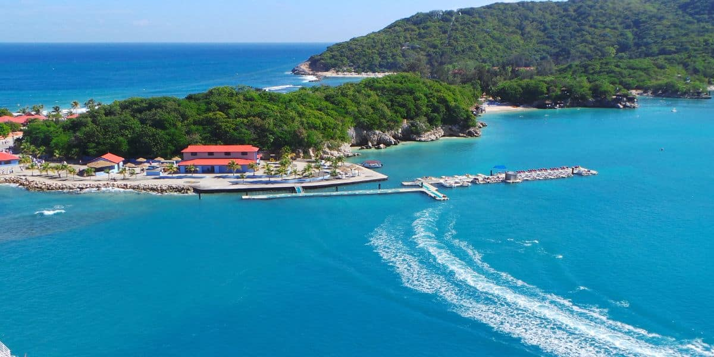
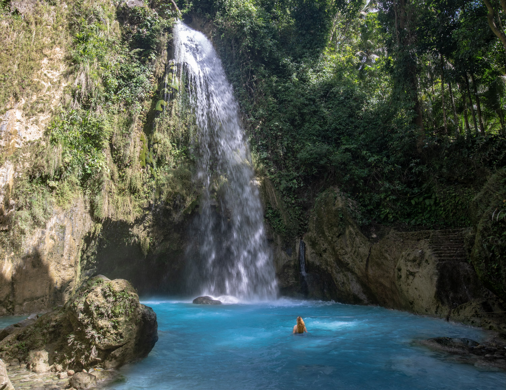
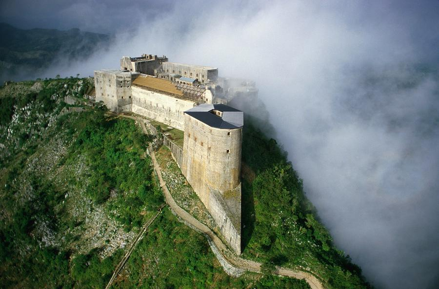
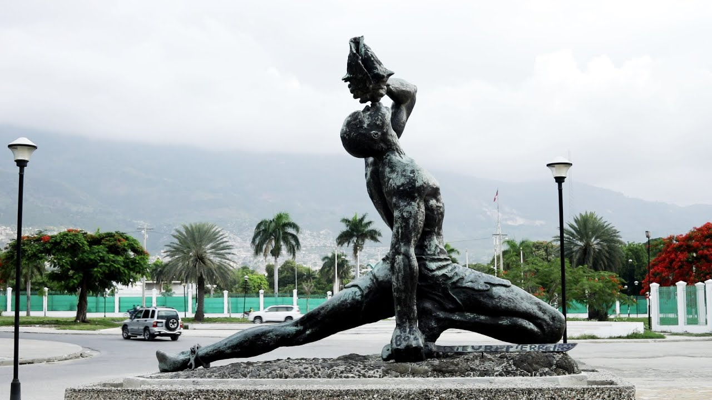

Escondida nas colinas exuberantes está uma montanha-russa alpina épica e a linha de voo mais longa do mundo que leva você até as águas calmas azul-turquesa a 500 pés abaixo. Para aqueles mais interessados em relaxar em vez de descer uma colina, Labadee Haiti também tem o que você precisa. É conhecida por suas belas praias com águas cristalinas, animado mercado artesanal e Dragon's Breath - a tirolesa mais longa do mundo sobre a água. É uma das atrações mais populares aqui, então chegue cedo para evitar as filas. Há também muitas atividades aquáticas e passeios disponíveis, como barcos de pesca, passeios de veleiro de luxo, excursões de mergulho com snorkel e cruzeiros de catamarã. Dezembro a abril são bons meses para visitar pelo clima agradável.
Escondido nas montanhas a 12 km a noroeste de Jacmel, Bassin Bleu é uma série de três piscinas azul-cobalto ligadas por cachoeiras que compõem um dos mais belos buracos de natação do Haiti. As três piscinas são Bassin Clair, Bassin Bleu e Bassin Palmiste. Bassin Clair é a mais bonita das três, nas profundezas da montanha no fundo da cachoeira, protegida e cercada por rochas lisas cobertas de avencas e samambaias trepadeiras. Infelizmente, é menos provável que você veja as ninfas que, segundo a lenda, vivem nas grutas, embora esteja avisado de que elas são conhecidas por agarrar mergulhadores que tentam descobrir a verdadeira profundidade da piscina. Conhecido por ser a joia da coroa de Jacmel, Bassin Blue está a uma lembrança de ser uma das melhores aventuras que você pode ter no Haiti.
A Citadelle Laferriere, comumente referida como Citadelle ou Citadelle Henry Christophe, é uma grande fortaleza no topo da montanha do Monte Bonnet a L'Eveque, no Haiti. Sendo uma das maiores fortalezas da América, foi designada pela Organização das Nações Unidas para a Educação, a Ciência e a Cultura (UNESCO) como patrimônio mundial em 1982. Construída de 1805 a 1820 por trabalhadores haitianos com o único objetivo de manter a nação a salvo dos ataques franceses. Foi construído no pico do Monte Bonnet a L'Eveque com uma altitude de 3.000 pés porque impediria ataques, pois estava em terreno mais alto e também fornecia uma visão binocular que ajudava a manter o bloqueio, mas felizmente o ataque francês nunca veio. A fortaleza foi construída com canhões feitos principalmente de pólvora que ostentam brasões dos monarcas do século 18.
"Homem Marrom",é uma estátua de bronze de um escravo fugitivo, mais conhecido como quilombola, no centro de Porto Príncipe, Haiti. Concluída em 22 de setembro de 1967 pelo arquiteto haitiano Albert Mangonès, a estátua é considerada um símbolo da libertação negra; comemorando, em particular, o grito de guerra que desencadeou a Revolução Haitiana e a abolição da escravidão. Situado em frente ao Palácio Nacional, é a representação mais icônica da luta pela liberdade da nação.
